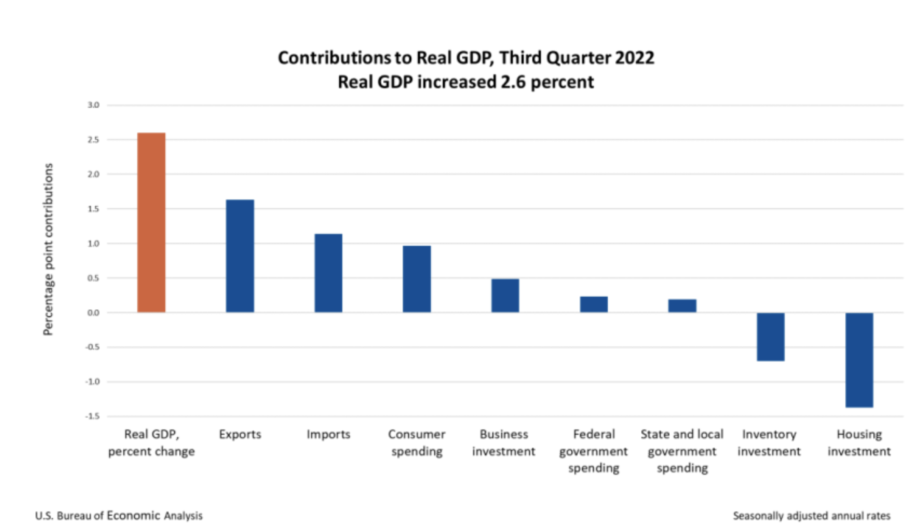
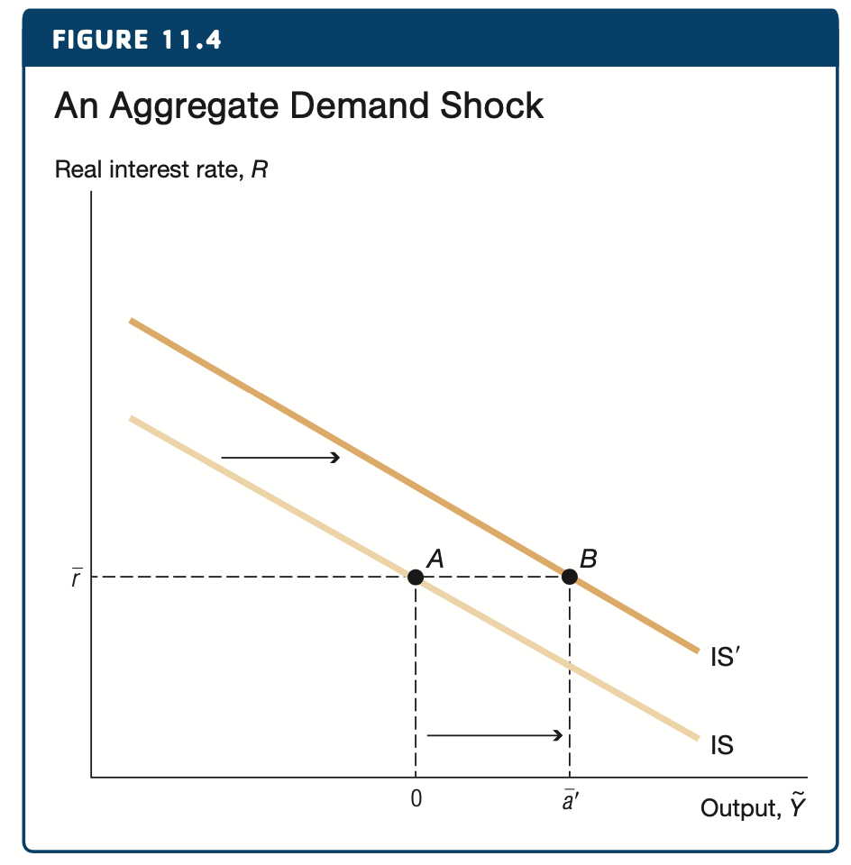
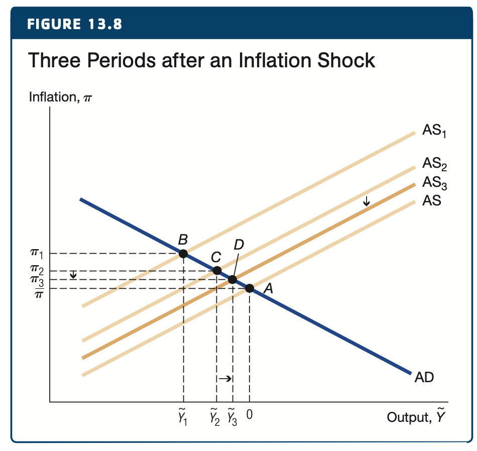

Econ 5120 Macroeconomic Theory
Chpt 13: Monetary Policy Rules and Aggregate Demand
Introduction
High frequency data
Short-Run Model
IS Curve Review
MP Curve
Phillips Curve
AS/AD
JOLTS
PCE

GDP Third Quarter
Fed Today
+75 bps, +3.75% YTD
Structure of the Short-Run Model
Source: Macroeconomics, Jones, 2021
Using the IS Curve
\[ \tilde{Y_t} = \bar{a} - \bar{b}(R_t-\bar{r}) \]
Curve is drawn with no aggregate demand shocks (\(\bar{a}=0\))
Point A: Long-run equalibrium \((R_t = \bar{r})\)
- short-run output is zero
Point B: Increase in real rates, \(R_t\) , leads to a decrease in output \(\tilde{Y}'_t\).
Example: \(\bar{a} = 0\) , \(\bar{b}=2\) , \(R=\bar{r}= 5\%\), and \(R'=6\%\).
- When real interest rate rises 1% short-run output decreases by 2%.
Source: Macroeconomics, Jones, 2021
Aggregate Demand
\(\bar{a} \equiv \bar{a}_c + \bar{a}_i + \bar{a}_g + \bar{a}_{ex} - \bar{a}_{im} -1\)

- An increase in aggregate demand, \(\bar{a}\) , shifts the IS curve out.
Source: Macroeconomics, Jones, 2021
IS Conclusions
\(\tilde{Y} = \bar{a}-\bar{b}(R_t-\bar{r})\)
\(\bar{a} \equiv \bar{a} + \bar{a}_i + \bar{a}_g + \bar{a}_{ex} - \bar{a}_{im} -1\)
Real interest rate has an inverse relationship with short-run output.
Multiplier effect increases the initial shock to \(\bar{a}\) .
Fiscal policy has the power to shift the IS curve, but is not always timely.
Structure of the Short-Run Model
Source: Macroeconomics, Jones, 2021
MP Curve in the IS-MP

The monetary policy (MP) curve is a horizontal line at the CB’s chosen interest rate.
- Real = nominal given our sticky inflation assumptions.
If \(R_t = \bar{r}\) then the marginal product of capital is equal to the real interest rate and short-run output is zero.
Source: Macroeconomics, Jones, 2021
Raising Rates in the IS-MP Diagram
If the CB raises the interest rate:
Inflation is sticky so \(R_t\approx i_t\)
Real interest rate is above the MPC
Firms and households cut back on their investments and output declines.
CB can cause a recession.
Source: Macroeconomics, Jones, 2021
End of the Housing Bubble
Policymakers suspect the housing bubble has burst.
Will lead to an aggregate demand, \(\bar{a}\), shift in the IS Curve.
This leads negative short-run output.
Policymakers step in and adjust the MP curve, decreasing real rates.
Leads to a movement along the IS curve back to zero short-run output.
Note: difficult in practice, takes 6 to 18 months.
Source: Macroeconomics, Jones, 2021
Structure of the Short-Run Model
Source: Macroeconomics, Jones, 2021
Phillips Curve
\[ \pi_t = \underbrace{\pi_t^e}_{expected\:inflation} + \underbrace{\bar{v}\tilde{Y}_t}_{demand\:conditions} + \underbrace{\bar{o}}_{inflation\:shock} \]
we assume adaptive expectations:
\[ \pi_t^e=\pi_{t-1} \]
Combine with above equation:
\[ \pi_t = \underbrace{\pi_{t-1}}_{expected\:inflation\:adap\:exp} + \underbrace{\bar{v}\tilde{Y}_t}_{demand\:conditions}+ \underbrace{\bar{o}}_{inflation\:shock} \]
Phillips Curve
\[ \Delta \pi_t = \bar{v}\tilde{Y}_t +\bar{o} \]
When the economy booms inflation rises
When the economy contracts inflation decreases
The sensitivity parameter, \(\bar{v}\) , governs the slope of the curve.
A high value means price setting behavior is very sensitive to the state of the economy.
Low means large recession to lower inflation.
Source: Macroeconomics, Jones, 2021
Phillips Curve Shift
\[ \Delta \pi_t = \bar{v}\tilde{Y}_t + \bar{o} \]
Price shocks, most notably oil, are common inflation drivers.
Cause a temporary shift of the Phillips Curve (PC) by \(\bar{o}\).
Direct and indirect effect.
Price shocks know as cost-push inflation. (change to \(\bar{o}\))
Change to \(\bar{v}\tilde{Y}_t\) is demand-pull inflation.
Source: Macroeconomics, Jones, 2021
Volker Disinflation
MP: \(\uparrow i_t \implies \uparrow R_t\) IS: \(\uparrow R_t \implies \downarrow\tilde{Y}_t\) PC: \(\downarrow\tilde{Y}_t \implies \downarrow \Delta \pi_t\)
Tightening monetary policy = setting \(i_t\) and \(R_t\) above MPC.
Faced with a real interest rate that is higher than the MPC firms and households put their investment plans on hold.
This leads to a drop in short-run output.
- 2% in the example
Source: Macroeconomics, Jones, 2021
Volker Disinflation
MP: \(\uparrow i_t \implies \uparrow R_t\) IS: \(\uparrow R_t \implies \downarrow\tilde{Y}_t\) PC: \(\downarrow\tilde{Y}_t \implies \downarrow \Delta \pi_t\)
Using the PC: a drop in short-run output, \(\tilde{Y}_t\) , leads to a drop in inflation.
Firms see demand for their products fall - raise prices less aggressively.
Inflation falls.
Source: Macroeconomics, Jones, 2021
Volker Disinflation
MP: \(\uparrow i_t \implies \uparrow R_t\) IS: \(\uparrow R_t \implies \downarrow\tilde{Y}_t\) PC: \(\downarrow\tilde{Y}_t \implies \downarrow \Delta \pi_t\)
This Volker-style policy can keep real interest rate high.
If a higher interest rate is sustained, then output will remain below potential output.
This will eventually lower the inflation rate to desired target.
At the cost of:
Lost output
Asset prices
Employment
Source: Macroeconomics, Jones, 2021
Short Run Model
Three Basic Equations:
IS Curve: \(\tilde{Y_t} = \bar{a} - \bar{b}(R_t-\bar{r})\)
MP Curve: The central bank chooses \(R_t\)
Phillips Curve: \(\Delta \pi_t = \bar{v}\tilde{Y}_t +\bar{o}\)
Trade-off between high short-run output and inflation
Central bank chooses how to make this trade-off by choosing the real interest rate
Monetary Policy Rule
\[ R_t-\bar{r} = \bar{m}(\pi_t-\bar{\pi}) \]
Simple version for this chapter, works well, but could depend on:
- Short-run output, aggregate demand shocks, inflation shocks, …
\(\bar{\pi}\) : inflation target
Since 2016 US, UK, EU and Japan all had targets of 2%
Is “steady-state” level of inflation
Monetary Policy Rule
\[ R_t-\bar{r} = \bar{m}(\pi_t-\bar{\pi}) \]
Policy rule: set the real interest rate, \(R_t\), based on inflation above or below inflation target.
If inflation is above target, central banks tighten monetary policy (\(R_t \uparrow\))
If inflation is below target, central banks stimulate the economy by decreasing \(R_t\).
Parameter \(\bar{m}\) governs how aggressively monetary policy responds to inflation.
- Example: \(\bar{m}\) = .5
Aggregate Demand (AD) Curve
IS Curve:
\[ \tilde{Y}_t = \bar{a} - \bar{b}(R_t - \bar{r}) \]
Policy Rule:
\[ R_t-\bar{r} = \bar{m}(\pi_t-\bar{\pi}) \]
Combine \(\implies\) AD Curve:
\[ \tilde{Y}_t = \bar{a} - \bar{b}\bar{m}(\pi_t-\bar{\pi}) \]
\[ \tilde{Y}_t = \underbrace{\bar{a} +\bar{b}\bar{m}\bar{\pi}}_{shifts} - \underbrace{\bar{b}\bar{m}\pi_t}_{movement\:along} \]
AD Curve
- Describes how the central bank sets short-run output for each level of inflation.
Source: Macroeconomics, Jones, 2021
AD Curve Movement Along
Starting at target inflation, increases to \(\pi'\).
Movement along the curve described by: \(-\bar{b}\bar{m}\pi_t\)
Aggressive Monetary Policy
Aggressiveness of monetary policy, \(\bar{m}\).
Movement along the curve described by: \(-\bar{b}\bar{m}\pi_t\)
Source: Macroeconomics, Jones, 2021
Aggregate Supply (AS) Curve
Aggregate Supply is the Phillips Curve
Movement along the curve: \(\bar{v}\tilde{Y}_t\)
Shift to the curve: \(\pi_{t-1} +\bar{o}\)
Use adaptive expectations: \(\pi^e = \pi_{t-1}\)
Source: Macroeconomics, Jones, 2021
AS / AD Framework
Steady-state
Inflation is equal to target inflation
Output is equal to potential output
Inflation must be steady (\(\pi_t=\pi_{t-1}=\bar{\pi}\))
AD curve is downward sloping - as inflation increase, central banks raise real rates, decreases output.
AS curve is upward sloping - price-setting behavior. If short-run output is greater than zero than inflation goes up.
Source: Macroeconomics, Jones, 2021
Inflation Shock
Lasting increase in the price of oil (e.g. 1970s, 1990, 2000)
Mathematically \(\bar{o}\) is positive for one period - this raises the price level permanently.
Monetary policy means that the change in inflation (from \(\bar{\pi}\) to \(\pi_1\)) is less than the shock, \(\bar{o}\) .
At this point output is below potential and inflation is above target.
- Stagflation
Source: Macroeconomics, Jones, 2021
Inflation Shock Next Steps
\(\pi_1 = \bar{\pi} + \bar{v}\tilde{Y}_1+\bar{o}\)
- AS shifts up by \(\bar{o}\) and central bank reacts by tightening policy \((\tilde{Y}_0 = 0 ) \rightarrow \tilde{Y}_1\) inflation moves from \(\bar{\pi}\) to \(\pi_1\).
\(\pi_2 = \pi_1 + \bar{v}\tilde{Y}_2+0\)
- AS shifts down by \(\bar{o}-\pi_1\) and central bank loosens policy \(\tilde{Y}_1 \rightarrow \tilde{Y}_2\) and inflation moves from \(\pi_1\) to \(\pi_2\).
Source: Macroeconomics, Jones, 2021
Inflation Shock Next Steps

\(\pi_3 = \pi_2 + \bar{v}\tilde{Y}_3+0\)
- AS shifts down by \(\pi_1-\pi_2\) and central bank loosens policy \(\tilde{Y}_2 \rightarrow \tilde{Y}_3\) and inflation moves from \(\pi_2\) to \(\pi_3\).
Source: Macroeconomics, Jones, 2021
Transition Dynamics
Transition dynamics also apply to AS/AD framework.
- Movement back to steady state is fastest when economy is furthest from steady state.
Inflation is raised directly - through one period shock.
Central bank induces a recession
Shock raises expected inflation but recession gradually cools inflation.
Source: Macroeconomics, Jones, 2021
Disinflation
What happens when policy makers choose a lower inflation target, \(\bar{\pi}\)?
\(\tilde{Y}_t = \underbrace{\bar{a} +\bar{b}\bar{m}\bar{\pi}}_{shifts} - \underbrace{\bar{b}\bar{m}\pi_t}_{movement\:along}\): shift down of the AD curve.
Initial response to a lower inflation target is a movement along the AS curve (lower short-run output).
Source: Macroeconomics, Jones, 2021
Disinflation Dynamics

Each period until steady-state the economy is still in a recession and AS shifts in.
Transition dynamics stop when real output is equal to potential output and \(\bar{\pi}=\bar{\pi}'\) .
Classical dichotomy and perfect information would lead to a simultaneous equilibrium when the next target is announced.
- Sticky inflation
Source: Macroeconomics, Jones, 2021
Positive AD Shock
Shock to \(\bar{a}\).
\(\tilde{Y}_t = \underbrace{\bar{a} +\bar{b}\bar{m}\bar{\pi}}_{shifts} - \underbrace{\bar{b}\bar{m}\pi_t}_{movement\:along}\): shift up of the AD curve.
A movement along the AS curve by \(\bar{v}\tilde{Y}_t\).
Leads to higher inflation and output.
Source: Macroeconomics, Jones, 2021
Positive AD Shock Dynamics
Since inflation is above target during period one, firms expect higher inflation and the AS curve shifts up.
AS continues to move until short-run output is equal to zero.
In this example, after 8 periods AS stops moving.
Source: Macroeconomics, Jones, 2021
Positive AD Shock Dynamics
The movement in AS led to higher inflation, \(\pi_8\) than target \(\bar{\pi}\).
Aggregate demand shocks, by definition, are temporary.
At some point \(\bar{a}\) goes back to it’s natural level. Reducing output (into a recession), and decreasing inflation.
Transition dynamics end back at point A.
Source: Macroeconomics, Jones, 2021
Positive AD Shock Dynamics
Booms matched with recessions. Business cycle.
Imperfect information leads to longer business cycles and policy errors.
Source: Macroeconomics, Jones, 2021
Empirical Evidence
Evaluate empirical predictions from our short run model.
Predicting the Fed Funds Rate
Our simply monetary policy rule provides some guidance:\(R_t -\bar{r} = \bar{m}(\pi_t -\bar{\pi})\)
Plug in the Fisher equation, \(i_t = R_t + \pi_t\) , to create the Monetary Policy Rule.
Monetary Policy Rule: \(i_t= \bar{r} +\pi_t+ \bar{m}(\pi_t -\bar{\pi})\).
- John Taylor suggest using \(\bar{r} = 2\%, \bar{m}=0.5, \bar{\pi}=2\%\).
Source: Macroeconomics, Jones, 2021
Monetary Policy Rule: US
Monetary Policy Rule: US
# download data
cpi <- fredr(series_id = "CPILFESL",
observation_start = ymd(19600101),
units = "pc1")
# Clean Data
cpi %>% head(5) %>% print()# A tibble: 5 × 5
date series_id value realtime_start realtime_end
<date> <chr> <dbl> <date> <date>
1 1960-01-01 CPILFESL 2.01 2022-11-02 2022-11-02
2 1960-02-01 CPILFESL 2.34 2022-11-02 2022-11-02
3 1960-03-01 CPILFESL 2 2022-11-02 2022-11-02
4 1960-04-01 CPILFESL 2 2022-11-02 2022-11-02
5 1960-05-01 CPILFESL 1.66 2022-11-02 2022-11-02 cpi <- cpi %>%
select(date, series_id, value) %>%
rename(id = series_id) %>%
mutate(id = "CPI")
cpi %>% head(5) %>% print()# A tibble: 5 × 3
date id value
<date> <chr> <dbl>
1 1960-01-01 CPI 2.01
2 1960-02-01 CPI 2.34
3 1960-03-01 CPI 2
4 1960-04-01 CPI 2
5 1960-05-01 CPI 1.66Monetary Policy Rule: US
# download data
fedfunds <- fredr(series_id = "FEDFUNDS",
observation_start = ymd(19600101))
# Clean Data
fedfunds %>% head(5) %>% print()# A tibble: 5 × 5
date series_id value realtime_start realtime_end
<date> <chr> <dbl> <date> <date>
1 1960-01-01 FEDFUNDS 3.99 2022-11-02 2022-11-02
2 1960-02-01 FEDFUNDS 3.97 2022-11-02 2022-11-02
3 1960-03-01 FEDFUNDS 3.84 2022-11-02 2022-11-02
4 1960-04-01 FEDFUNDS 3.92 2022-11-02 2022-11-02
5 1960-05-01 FEDFUNDS 3.85 2022-11-02 2022-11-02 fedfunds <- fedfunds %>%
select(date, series_id, value) %>%
rename(id = series_id)
fedfunds %>% head(5) %>% print()# A tibble: 5 × 3
date id value
<date> <chr> <dbl>
1 1960-01-01 FEDFUNDS 3.99
2 1960-02-01 FEDFUNDS 3.97
3 1960-03-01 FEDFUNDS 3.84
4 1960-04-01 FEDFUNDS 3.92
5 1960-05-01 FEDFUNDS 3.85Monetary Policy Rule: US
# Combine two long series
dat <- bind_rows(cpi, fedfunds)
# Create wide serie
dat_wide <- dat %>% pivot_wider(names_from = id)
dat_wide %>% head(5) %>% print()# A tibble: 5 × 3
date CPI FEDFUNDS
<date> <dbl> <dbl>
1 1960-01-01 2.01 3.99
2 1960-02-01 2.34 3.97
3 1960-03-01 2 3.84
4 1960-04-01 2 3.92
5 1960-05-01 1.66 3.85Monetary Policy Rule: US
Monetary Policy Rule: US
Monetary Policy Rule: JAPAN
# download data
inflation <- fredr(series_id = "JPNCPIALLMINMEI",
observation_start = ymd(19650101),
units = "pc1")
# Clean Data
inflation %>% head(5) %>% print()# A tibble: 5 × 5
date series_id value realtime_start realtime_end
<date> <chr> <dbl> <date> <date>
1 1965-01-01 JPNCPIALLMINMEI 6.87 2022-11-02 2022-11-02
2 1965-02-01 JPNCPIALLMINMEI 6.77 2022-11-02 2022-11-02
3 1965-03-01 JPNCPIALLMINMEI 6.96 2022-11-02 2022-11-02
4 1965-04-01 JPNCPIALLMINMEI 7.95 2022-11-02 2022-11-02
5 1965-05-01 JPNCPIALLMINMEI 6.84 2022-11-02 2022-11-02 inflation <- inflation %>%
select(date, series_id, value) %>%
rename(id = series_id) %>%
mutate(id = "INFLATION")
inflation %>% head(5) %>% print()# A tibble: 5 × 3
date id value
<date> <chr> <dbl>
1 1965-01-01 INFLATION 6.87
2 1965-02-01 INFLATION 6.77
3 1965-03-01 INFLATION 6.96
4 1965-04-01 INFLATION 7.95
5 1965-05-01 INFLATION 6.84Source: Inflation | Overnight Rate
Monetary Policy Rule: JAPAN
# download data
overnight <- fredr(series_id = "IRSTCB01JPM156N",
observation_start = ymd(19650101))
# Clean Data
overnight %>% head(5) %>% print()# A tibble: 5 × 5
date series_id value realtime_start realtime_end
<date> <chr> <dbl> <date> <date>
1 1965-01-01 IRSTCB01JPM156N 6.21 2022-11-02 2022-11-02
2 1965-02-01 IRSTCB01JPM156N 6.21 2022-11-02 2022-11-02
3 1965-03-01 IRSTCB01JPM156N 6.21 2022-11-02 2022-11-02
4 1965-04-01 IRSTCB01JPM156N 5.84 2022-11-02 2022-11-02
5 1965-05-01 IRSTCB01JPM156N 5.84 2022-11-02 2022-11-02 overnight <- overnight %>%
select(date, series_id, value) %>%
rename(id = series_id) %>%
mutate(id = "OVERNIGHT")
overnight %>% head(5) %>% print()# A tibble: 5 × 3
date id value
<date> <chr> <dbl>
1 1965-01-01 OVERNIGHT 6.21
2 1965-02-01 OVERNIGHT 6.21
3 1965-03-01 OVERNIGHT 6.21
4 1965-04-01 OVERNIGHT 5.84
5 1965-05-01 OVERNIGHT 5.84Source: Inflation | Overnight Rate
Monetary Policy Rule: JAPAN
# Combine two long series
dat <- bind_rows(inflation, overnight)
# Create wide series
dat_wide <- dat %>% pivot_wider(names_from = id)
dat_wide %>% head(5) %>% print()# A tibble: 5 × 3
date INFLATION OVERNIGHT
<date> <dbl> <dbl>
1 1965-01-01 6.87 6.21
2 1965-02-01 6.77 6.21
3 1965-03-01 6.96 6.21
4 1965-04-01 7.95 5.84
5 1965-05-01 6.84 5.84Source: Inflation | Overnight Rate
Monetary Policy Rule: JAPAN
Source: Inflation | Overnight Rate
Monetary Policy Rule: JAPAN
Source: Inflation | Overnight Rate
Monetary Policy Rule: European Union
Dates: 2000-01-01
Use Monthly (frequency = “m”)
Template: Monetary Policy Rule US
Source: Inflation Data | ECB Overnight Deposit
Monetary Policy Rule: ECB
Source: Inflation Data | ECB Overnight Deposit
Inflation / Output Loops

The business cycle implies counter-clockwise loops though time when plotted on the inflation/output scale.
Positive short-run output leads inflation rate to rise.
Rise in inflation leads policymakers to reduce output.
In graph (on years time-scale)
Economy booms, inflation increases.
Inflation is high, output declines.
Source: Macroeconomics, Jones, 2021
Inflation / Output Loops
More recent history this has not held true.
- Inflation has been incredibly stable in the 2000’s
Source: Macroeconomics, Jones, 2021
Forecasting the Business Cycle
Observations have a lag.
Use leading economic indicators to forecast.
Fed funds rate
Term structure of interest rates
Unemployment claims
Housing starts
Source: Macroeconomics, Jones, 2021
Example
Modern Monetary Policy
World is more complicated than the short-run model
Policy makers have discretion
Movement toward transparency on central bank policies and targets
Simple models work well as guidlines
Rules vs Discretion
A strict monetary policy rule can be computerized and left alone.
- Impossible to know what the next shock could be, 1970s oil, GFC, Covid, war, etc
A commitment to a policy allows non-emotional decisions to be made.
Explicit policy rules, transparency, credibility and a reputation for making the right long-run choices are important for central banks.
Rational Expectations
Ultimate goal for an economy depends on a steady and low inflation rate.
- Full employment, output at potential, etc
Instead of adaptive expectations \(\pi_t^e = \pi_{t-1}\) we assume rational expectations - people use all information at their disposal to make their best forecast of inflation.
If we have a policymaker that is dedicated to a low inflation rate, either through a high value of \(\bar{m}\) or other methods than \(\pi_t^e\) stays low and stable. Manage \(\pi_t^e\) .
Firms know that the central bank will fight to lower prices sharply if needed.
Managing Expectations: AS/AD
If we replace \(\pi_t^e = \pi_{t-1}\) then we can rewrite out AS model: \(\pi_2=\pi^e_t + \bar{v}\tilde{Y}_t+\bar{o}\) .
Consider a change in inflation target from 4% to 2%.
Imagine that people believe the new target will prevail and set \(\pi^e\) = 2%.
AD shifts down
Expectations adjust immediately \(\implies\) AS shifts down.
Economy moves from point A to point B without a costly recession.
Source: Macroeconomics, Jones, 2021
Inflation Targeting
In order to manage \(\pi_t^e\) countries have started to adopt inflation targets.
- US, Japan, UK, Australia, Brazil, Canada, Mexico, NZ, and Sweden.
Not required to deliver on the target but it does anchor expectations.
Target helps firms deviate from price-setting behavior in response to shocks.
US currently set at 2%.
Great Moderation
Chapter 14: GFC Short-Run
Financial frictions: Despite fed funds rate going from 5% to ~0%, the interest rate at which households and firms could borrow was higher than before the crisis.
These financial frictions can be offset by lowering target rate, but there is a zero lower bound. Which led to unconventional monetary measures.
AS/AD suited for normal times, use IS/MP/PC for GFC.
Deflation: Holding the nominal interest rate constant \(\implies\) deflation raises real interest rates. Can lead to a vicious cycle.
Faced with zero fed funds and deflation, the fed used unconventional policies: TARP, QE, and fiscal spending.
Financial Frictions
In normal times the Fed effectively sets the real interest rate. This is the rate that households and firms borrow at.
Solvency and liquidity worries led to financial frictions.
The spread between government securities and the interest rate that firms and households pay increased.
10 year treasuries were ~6% below investment grade “medium” risk paper.
Source: Macroeconomics, Jones, 2021
Financial Frictions
We incorporate this into our short-run model: \(R=R^{ff}+\bar{f}\).
\(\bar{f}\) represents the exogenous risk premium that sits between the fed funds rate \(R^{ff}\) and the real interest rate that firms borrow in financial markets.
During normal times \(\bar{f} =0\).
Leads to investment shock to the IS curve.
Source: Macroeconomics, Jones, 2021
GFC Shock to IS Curve
Financial frictions: Fears over solvency and liquidity led to financial frictions.
This led to interest rate spikes and a stock market downturn, in addition to the housing market downturn.
Interest rates spiked resulting in a 30% decline in investment, \(\bar{a}_i \downarrow\).
Stock and housing market declines reduced wealth and consumption leading to \(\bar{a}_c \downarrow\).
IS/MP Framework

In normal times an negative aggregate demand shock will shift the IS curve down. (from IS to IS’).
In response the central bank will lower the fed funds rate, \(R^{ff}\), below the MPC, \(\bar{r}\).
This will shift output back to potential, eliminating the recession.
Source: Macroeconomics, Jones, 2021
IS/MP Framework
During the GFC the Fed lowered the fed funds rate, which should have increase output.
Households and firms saw an interest rate of \(R^{ff} + \bar{f}\) .
Despite the Fed’s actions the economy saw an even deeper recession.
The fed lowered to zero, but still did not stimulate the economy.
Fed then took non conventional measures.
Source: Macroeconomics, Jones, 2021
AS/AD Framework

IS Curve: \(\tilde{Y} = \bar{a} - \bar{b}(R_t - \bar{r})\)
Monetary Policy Rule: \(R_t^{ff}-\bar{r}=\bar{m}(\pi_t-\bar{\pi})\)
Financial Friction: \(R_t=R_t^{ff} + \bar{f}\)
Combining financial friction with monetary policy: \(R_t-\bar{r}=\bar{f}+\bar{m}(\pi_t-\bar{\pi})\)
The new AD curve: \(\tilde{Y}=\underbrace{\bar{a}-\bar{b}\bar{f}}_{AD\:shock}-\bar{b}\bar{m}(\pi_t - \bar{\pi})\)
- Financial friction acts similar to an AD shock.
Deflation.
Source: Macroeconomics, Jones, 2021
Covid-19 Spreads
Deflation
Fisher equation: \(i_t=R_t+\pi_t\)
Rearrange: \(R_t = i_t -\pi_t\)
If \(\pi < 0\) then real interest rate increases.
Central banks normally respond to \(\bar{a}\downarrow\) by \(i \downarrow\).
1930’s Great Depression
Fed did not lower \(i\) because of fear of asset bubbles, deflation increase \(R\) sharply.
In 1933 the Fed lowered rates and economy turned around.
Deflation
What if we have deflation coupled with a low nominal interest rate?
The Fed faces a zero lower bound on \(i\).
- Imagine \(i=0\), \(R_t=-\pi_t\).
- Deflation \(\implies R_t \uparrow\)
Household and firms investment:
If MPC is 1%, and inflation is 3%, investment.
If MPC is 1% and inflation is -3%, no investment.
Deflation - Liquidity Trap
Deflation coupled with a zero nominal interest rate causes a liquidity trap.
Firms and households do not want to borrow. Liquidity is trapped inside the banks and will not stimulate the economy.
Theoretically at this point currency and bonds are the same.
Other unconventional solutions:
Japan has engaged in extensive open market operations for the past 20 years.
Fed tripled balance sheet.
Neither has had the recovery that was hoped for.
Deflationary Spiral
Recession causes deflation.
Deflation raises \(R\).
Recession deepens.
Causes more deflation.
Deflation Remedies
Fiscal stimulus
Unconventional monetary policy
Manage \(\pi^e\)

ECON 5120 | Scott Payseur